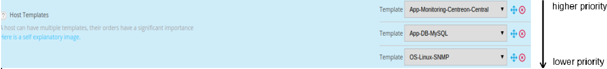

Templates¶
Definition¶
A Template is a pre-configuration of settings of an object that could be used to configure it. The main advantage is to be able to define default values for certain objects to speed up the creation of similar objects.
On creation of a Template, only the template name is mandatory. The other attributes are optional.
There are 3 types of templates:
- Hosts Templates
- Services Templates
- Contacts Templates
The advantages are:
- Simplified element definition
- No duplication of data
- Facility of addition of new resources
- Predefined configurations assimilated to a “catalogue of indicators”
- Templates can inherit from other templates.
Host Templates¶
Inheritance¶
A host or a host template can inherit from one or more host templates. This heritage may be:
- associative (addition of multiple host templates)
- parent-child type
Parent-child type inheritance¶
This is a predefinition of settings at “n” levels. The object inherits from its Template which can itself inherit from its Template. If the child redefines a setting, this setting overwrites that defined in the higher level templates. Otherwise it is added to the settings.
Associative type inheritance¶
This consists of adding together several templates within the same object in order to add together all the settings available. If a host inherits from several host templates and if the same setting is defined on several templates, the host templates situated above the other templates has priority in relation to its ancestors.
The diagram below shows a host inheriting from multiple host templates.

Services Templates¶
Inheritance¶
A service or a service template can only inherit from a single service template (parent-child type inheritance).

Best practice¶
Explanations¶
Good practice requires that services templates be associated with host’s templates: on creation of a host, the services are generated automatically from host’s templates. There are two advantages in linking services templates to hosts templates:
- The services generated automatically retain their granularity: it is possible to change the Attributes of a service without affecting the other services obtained from this template
- The creation of new hosts is speeded up greatly: you simply have to define the host and the host’s templates associated with it
E.g.: We create the srvi-web-01 host according to the template below:

The host srvi-web-01 will automatically possess the following services:
- Load, CPU, Memory, disk-/ from services templates linked to the host template “Linux-Server-RedHat-5”
- Broken-jobs, hit-ratio, tablespaces, listener from services templates linked to the host template “DB-MySQL”
- Process and connection from services templates linked to the host template “Web-Server-Apache”
When the services of a host are generated from host’s templates, it is possible that certain services generated are not checked by the supervision tool. In this case, it is necessary to disable the services that are not used (but not to delete them). In case of deletion of services, regeneration of services of the host from host’s templates will re-create the services deleted.
Configuration¶
The linking of services templates with host’s templates takes place in the Relations tab of the services templates or hosts templates.